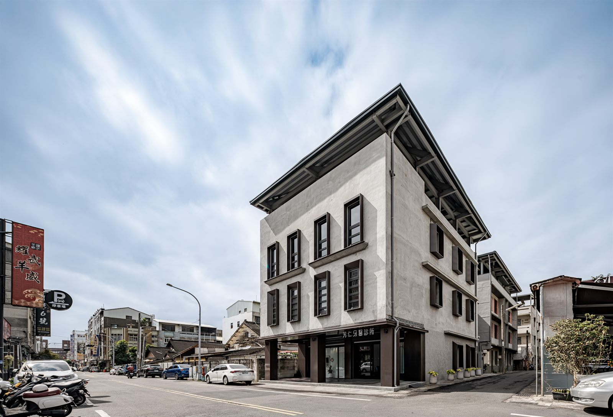
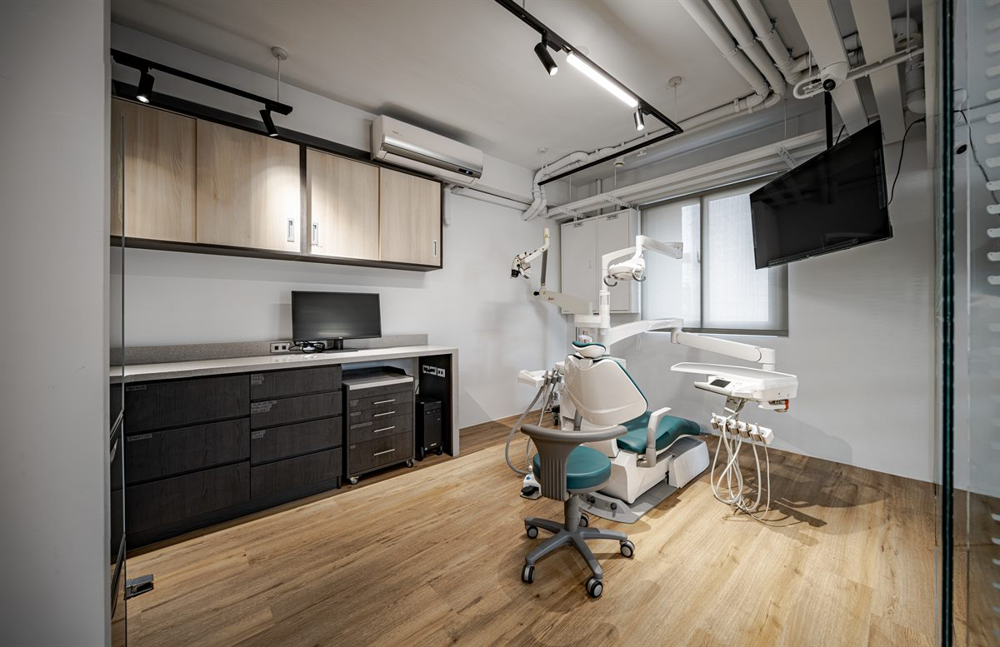
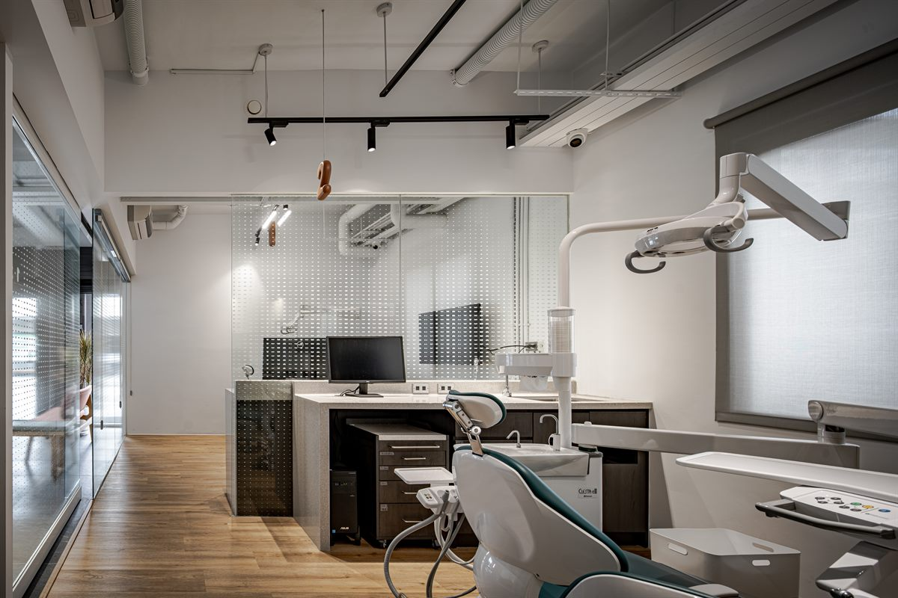

李柄輝創辦醫師
- 專長
- 口腔檢查、一般牙科治療
- 資歷
- 台灣國際植牙醫師學會專科醫師（ATIOI）
國際牙醫學院院士（TICD）
衛生福利部家庭牙醫專科 - 學歷
- 中山醫學大學牙醫學博士

從中華路到永樂街，四十多年，
有跟著換的，也有一直顧的。
斗六厝邊這些年最常問的，一篇一篇寫在這裡。
目前共 6 篇，依最後更新時間排序

牙弓不夠寬，恆牙就像在擠公車，沒位置站只能前後亂鑽。6 到 12 歲顎骨還沒定型，是引導牙弓向外擴張的黃金期。認識兒童隱適美與肌功能矯正，以及爸媽在家就能觀察的三個徵兆。

洗牙不會把牙齒洗薄，也不是美白。它清的是自己刷不掉的牙結石，順便讓醫師在問題還小的時候先看見它。

缺一顆牙不只是缺一顆牙。旁邊的牙會倒、對面的牙會長長、齒槽骨會流失。三種重建方式各自的原理、代價與限制。

「乳牙反正會換掉」是最常見也最昂貴的誤解。從第一顆牙長出來後的六個月談起，帶爸媽看懂塗氟、窩溝封填與健保給付。

健康的牙齦被牙刷碰到不會出血。流血代表牙齦正在發炎，而發炎和退火無關，是牙菌斑長期堆積的結果。認識牙齦炎與牙周炎那條關鍵的分界線。

刷得用力不等於刷得乾淨。刷毛斜四十五度對準牙齒與牙齦的交界，一次只顧兩顆牙，原地來回十次——這是把牙菌斑真正刷掉的方法。
九位醫師駐診，涵蓋六個部定專科
雲林縣斗六市・在地經營超過四十年
雲林縣斗六市永樂街 70 號
在 Google 地圖開啟
週一至週五
上午 08:45–12:00
下午 13:45–16:45
晚上 17:45–20:30
週六、週日休診。國定假日門診時間請來電確認。

